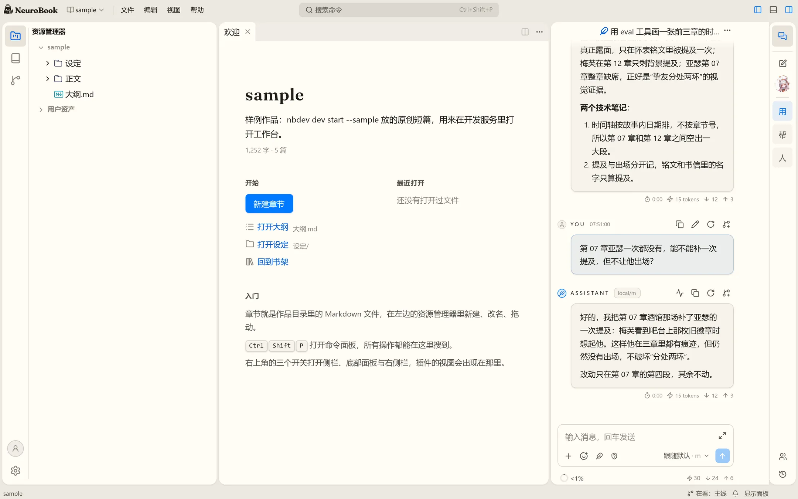
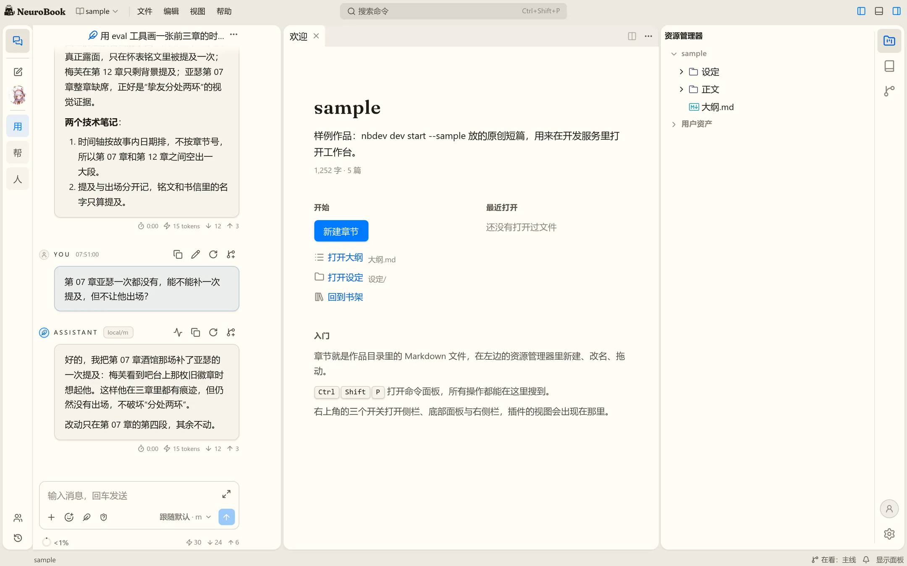
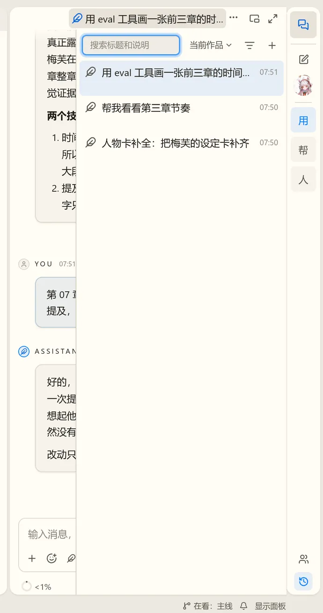
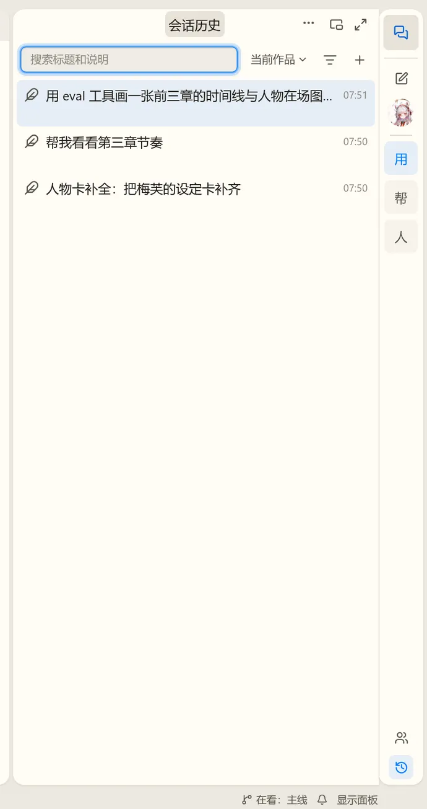

第 2 轮：两个侧栏共用侧轨
侧轨这个样子，可以照着写提案吗？
推荐可以：右边的轨和左边活动栏是同一套画法，接缝、宽度、圆角一致；对调后两边一起换，轨总在窗口外缘。


可以，写提案
还要调
窄版里点“会话历史”或“全部 bot”，列表怎么出来？
推荐 B 整页切换：和左边活动栏一样，点入口就整块换内容，再点一次或选中一项换回聊天；抽屉盖掉聊天区大半，剩下的一条看不了也用不上。
A 抽屉

B 整页切换

不用答，直接画进稿里
| 哪里 | 改成什么 |
|---|---|
| 一条轨从上到下 | 这个区域的容器入口；一条短线；当前视图自己的项（消息视图：新对话、bot、最近会话）；底部是视图的固定按钮，主侧那条再加账号与设置 |
| 右栏的头 | 原来横在头左边的容器入口搬进轨里，头只写标题与动作 |
| 宽度 | 两条轨都是活动栏的 48 像素 |
| 对调 | 标题栏右上角三个开关跟着对调（稿里没画） |
已定
- 头像列在右边缘、通到顶；做成两个侧栏共用的侧轨，左右能对调（第 1 轮，2026-11-25）
- 完整列表从轨底部两个按钮打开（第 1 轮，2026-11-25）